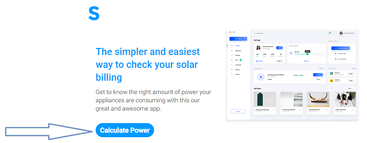
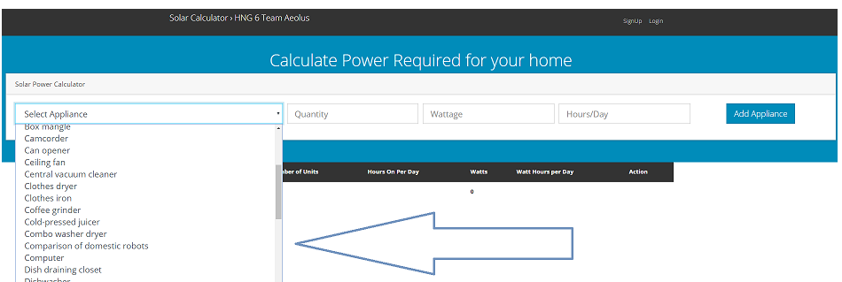
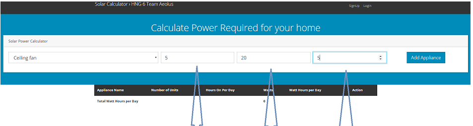
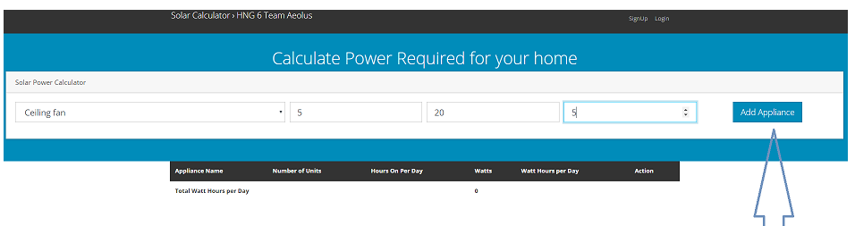
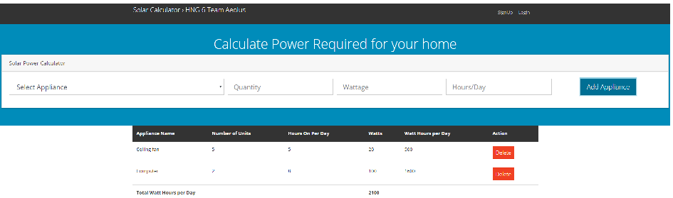
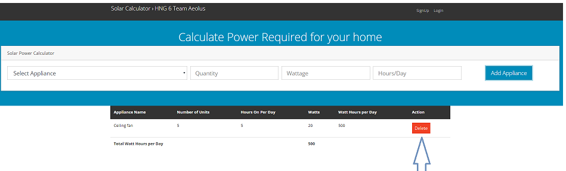

How to use the Solar calculator
Here is a step-by-step guide on how to calculate the required amount for power for all your appliances using the solar calculator!
Requirements for Calculation
All you need to get started making your calculations are:
- Appliance E.g TV
- Number of appliance - How many TVs do you intend to use
- Wattage - How many Watts of power does the TV require (This can usually be found on the back/rear of the appliance)
- Duration of use - How long do you intend to use the TV for?
That's All!!!
How to Calculate
- Step 1: Click on the "Calculate Power" button on the Homepage

- Step 2: Click on the "Select Appliance" box.

This produces a dropdown of appliances to select from (easy-peasy)!

- Step 3: Fill in the fields for "Qualtity", "Wattage" and "Hours/Days" as appropriate.

- Step 4: Click "Add Appliance"!

- You can add as many appliances as required to get the total power required

- You can also delete an appliance by clicking on the "Delete" button

And that's all!! Your power requirements will be calculated for you instantly!!
Solar Calculator also gives you the additional ability to sign in so you can access your calculations whenever you log in.
Click here to get started!